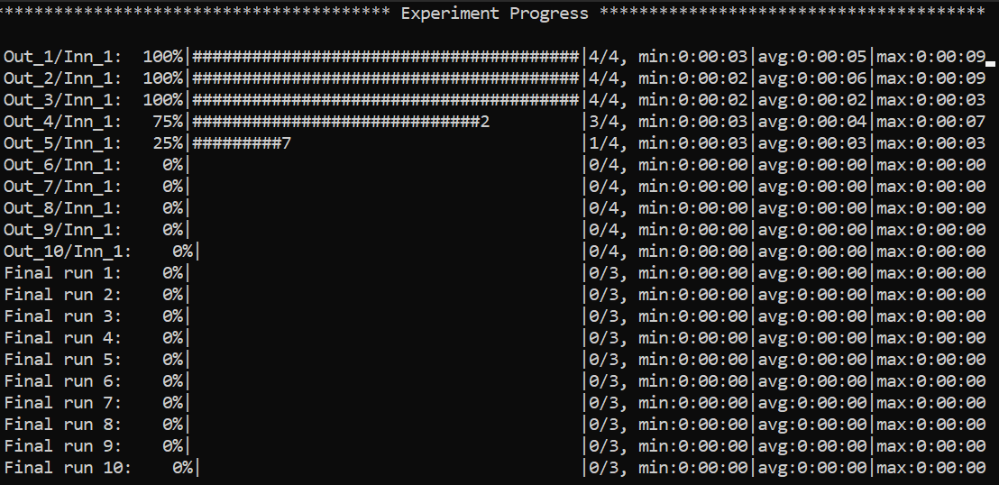
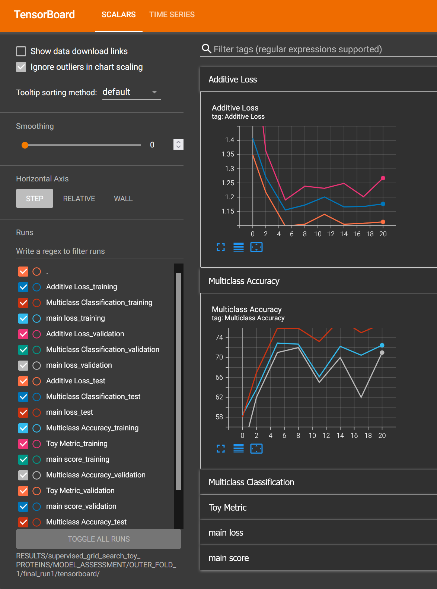

Tutorial
Knowing how to set up valid YAML configuration files is fundamental to properly use PyDGN. Custom behavior with more advanced functionalities can be generally achieved by subclassing the individual modules we provide, but this is very much dependent on the specific research project.
Data Preprocessing
The ML pipeline starts with the creation of the dataset and of the data splits. The general template that we can use is the following, with an explanation of each field as a comment:
splitter:
root: # folder where to store the splits
class_name: # dotted path to splitter class
args:
n_outer_folds: # number of outer folds for risk assessment
n_inner_folds: # number of inner folds for model selection
seed:
stratify: # target stratification: works for graph classification tasks only
shuffle: # whether to shuffle the indices prior to splitting
inner_val_ratio: # percentage of validation for hold-out model selection. this will be ignored when the number of inner folds is > than 1
outer_val_ratio: # percentage of validation data to extract for risk assessment final runs
test_ratio: # percentage of test to extract for hold-out risk assessment. this will be ignored when the number of outer folds is > than 1
dataset:
root: # path to data root folder
class_name: # dotted path to dataset class
args: # arguments to pass to the dataset class
arg_name1:
arg_namen:
transform: # on the fly transforms: useful for social datasets with no node features (with an example)
- class_name: pydgn.data.transform.ConstantIfEmpty
args:
value: 1
# pre_transform: # transform data and store it at dataset creation time
# pre_filter: # filter data and store it at dataset creation time
Data Splitting
We provide a general Splitter class that is able to split a dataset of multiple graphs. The most important parameters
are arguably n_outer_folds and n_inner_folds, which represent the way in which we want to perform risk assessment
and model selection. For instance:
n_outer_folds=10andn_inner_folds=1: 10-fold external Cross Validation (CV) on test data, with hold-out model selection inside each of the 10 folds,
n_outer_folds=5andn_inner_folds=3: Nested CV,
n_outer_folds=1andn_inner_folds=1: Simple Hold-out model assessment and selection, ortrain/val/testsplit.
We assume that the difference between risk assessment and model selection is clear to the reader. If not, please refer to Samy Bengio’s lecture (Part 3).
Here’s an snippet of a potential configuration file that splits a graph classification dataset:
splitter:
root: examples/DATA_SPLITS/CHEMICAL
class_name: pydgn.data.splitter.Splitter
args:
n_outer_folds: 10
n_inner_folds: 1
seed: 42
stratify: True
shuffle: True
inner_val_ratio: 0.1
outer_val_ratio: 0.1
test_ratio: 0.1
Dataset Creation
To create your own dataset, you should implement the DatasetInterface interface. For
instance, we provide a wrapper around the TUDataset
dataset of Pytorch Geometric in TUDatasetInterface, which you can check to get an idea.
Here’s an snippet of a potential configuration file that downloads and processes the PROTEINS graph classification dataset:
dataset:
root: DATA/
class_name: pydgn.data.dataset.TUDataset
args:
root: DATA/
name: PROTEINS
You can also apply transform, pre_transform and pre_filter that follow the same semantic of PyG.
Once our data configuration file is ready, we can create the dataset using (for the example above)
pydgn-dataset --config-file examples/DATA_CONFIGS/config_PROTEINS.yml
Experiment Setup
Once we have created a dataset and its data splits, it is time to implement our model and define a suitable task.
Every model must implement the ModelInterface interface, and it can optionally use a
readout module that must implement the ReadoutInterface.
At this point, it is time to define the experiment. The general template that we can use is the following, with an explanation of each field as a comment:
# Dataset and Splits
data_root: # path to DATA root folder (same as in data config file)
dataset_class: # dotted path to dataset class
dataset_name: # dataset name (same as in data config file)
data_splits_file: # path to data splits file
# Hardware
device: # cpu | cuda
max_cpus: # > 1 for parallelism
max_gpus: # > 0 for gpu usage (device must be cuda though)
gpus_per_task: # percentage of gpus to allocate for each task
# Data Loading
dataset_getter: # dotted path to dataset provider class
data_loader:
class_name: # dotted path to data loader class
args:
num_workers :
pin_memory:
# possibly other arguments (we set `worker_init_fn`, `sampler` and `shuffle`, so do not override)
# Reproducibility
seed: 42
# Experiment
result_folder: # path of the folder where to store results
exp_name: # name of the experiment
experiment: # dotted path to experiment class
higher_results_are_better: # model selection: should we select based on max (True) or min (False) main score?
evaluate_every: # evaluate on train/val/test every `n` epochs and log results
final_training_runs: # how many final (model assessment) training runs to perform to mitigate bad initializations
# Grid Search
# if only 1 configuration is selected, any inner model selection will be skipped
grid:
supervised_config:
model: # dotted path to model class
checkpoint: # whether to keep a checkpoint of the last epoch to resume training
shuffle: # whether to shuffle the data
batch_size: # batch size
epochs: # number of maximum training epochs
# Model specific arguments #
# TBD
# ------------------------ #
# Optimizer (with an example - 3 possible alternatives)
optimizer:
- class_name: pydgn.training.callback.optimizer.Optimizer
args:
optimizer_class_name: torch.optim.Adam
lr:
- 0.01
- 0.001
weight_decay: 0.
- class_name: pydgn.training.callback.optimizer.Optimizer
args:
optimizer_class_name: torch.optim.Adagrad
lr:
- 0.1
weight_decay: 0.
# Scheduler (optional)
scheduler: null
# Loss metric (with an example of Additive Loss)
loss:
- class_name: pydgn.training.callback.metric.AdditiveLoss
args:
loss_1: pydgn.training.callback.metric.MulticlassClassification
loss_2: pydgn.training.callback.metric.MulticlassClassification
# Score metric (with an example of Multi Score)
scorer:
- class_name: pydgn.training.callback.metric.MultiScore
args:
main_scorer: pydgn.training.callback.metric.MulticlassAccuracy
my_second_metric: pydgn.training.callback.metric.ToyMetric
# Readout (optional)
readout:
# Training engine
engine: pydgn.training.engine.TrainingEngine
# Gradient clipper (optional)
gradient_clipper: null
# Early stopper (optional, with an example of "patience" early stopping on the validation score)
early_stopper:
- class_name:
- pydgn.training.callback.early_stopping.PatienceEarlyStopper
args:
patience:
- 5
# SYNTAX: (train_,validation_)[name_of_the_scorer_or_loss_to_monitor] -> we can use MAIN_LOSS or MAIN_SCORE
monitor: validation_main_score
mode: max # is best the `max` or the `min` value we are monitoring?
checkpoint: True # store the best checkpoint
# Plotter of metrics
plotter: pydgn.training.callback.plotter.Plotter
Data Information
Here we can specify some information about the dataset:
data_root: DATA
dataset_class: pydgn.data.dataset.TUDatasetInterface
dataset_name: PROTEINS
data_splits_file: examples/DATA_SPLITS/CHEMICAL/PROTEINS/PROTEINS_outer10_inner1.splits
Hardware
Here we can define how many resources to allocate to parallelize different experiments:
# this will run a maximum of 4 experiments to allocate all of the 2 gpus we have.
# We use some more cpu resources to take into account potential `data loader workers <https://pytorch.org/docs/stable/data.html#multi-process-data-loading>`_.
device: cuda
max_cpus: 8
max_gpus: 2
gpus_per_task: 0.5
Data Loading
Here we specify which DataProvider we want to use to load the data associated with the
given splits, and the DataLoader that needs to handle such data:
# Data Loading
dataset_getter: pydgn.data.provider.DataProvider
data_loader:
class_name: torch_geometric.loader.DataLoader
args:
num_workers : 2
pin_memory: True # should be True when device is set to `cuda`
Experiment Details
Here we define the experiment details, including the experiment name and type, and the folder where we want to store our results:
result_folder: RESULTS
exp_name: supervised_grid_search_toy
experiment: pydgn.experiment.supervised_task.SupervisedTask
higher_results_are_better: True
evaluate_every: 3
final_training_runs: 3
Grid Search
Grid search is identified by the keyword grid after the experimental details. This is the easiest setting, in which
you can define lists associated to an hyper-parameter and all possible combinations will be created. You can even have
nesting of these combinations for maximum flexibility.
There is one config file examples/MODEL_CONFIGS/config_SupToyDGN.yml that you can check to get a better idea.
Random Search
Random search, on the other hand, is identified by the keyword random after the experimental details. One line above
we have to specify the number of random trials, using the keyword num_samples.
- We provide different sampling methods:
choice –> pick at random from a list of arguments
uniform –> pick uniformly from min and max arguments
normal –> sample from normal distribution with mean and std
randint –> pick at random from min and max
loguniform –> pick following the recprocal distribution from log_min, log_max, with a specified base
There is one config file examples/MODEL_CONFIGS/config_SupToyDGN_RandomSearch.yml that you can check to get a better idea.
Experiment
Depending on the experiment type, different main keywords are required:
SupervisedTask->supervised_config
SemiSupervisedTask->unsupervised_configandsupervised_config
Note that an unsupervised task may be seen as a supervised task with a loss objective that does not depend on the target. In the supervised task, we have the “standard” training procedure. In the semi-supervised task, we expect a first training phase which is unsupervised and that can produce node/graph embeddings. After that, a second, supervised model is trained on such embeddings, but adjacency information is not preserved in this second stage.
Inside the dictionary associated to the keyword [un]supervised_config, we expect another number of keywords to be
present:
model: # dotted path to model class
checkpoint: # whether to keep a checkpoint of the last epoch to resume training
shuffle: # whether to shuffle the data
batch_size:
epochs: # number of maximum training epochs
# Model specific arguments #
# ------------------------ #
optimizer:
scheduler: # (can be "null")
loss:
scorer:
readout: # (can be "null")
engine: # training engine
gradient_clipper: # (can be "null")
early_stopper: # (can be "null")
plotter: # (can be "null")
Once our experiment configuration file is ready, we can launch an experiment using (see below for a couple of examples)
pydgn-dataset --config-file examples/MODEL_CONFIGS/config_SupToyDGN.yml
or
pydgn-dataset --config-file examples/MODEL_CONFIGS/config_SemiSupToyDGN.yml
And we are up and running!
{kind=link}
To stop the computation, use CTRL-C to send a SIGINT signal, and consider using the command ray stop to stop
all Ray processes. Warning: ray stop stops all ray processes you have launched, including those of other
experiments in progress, if any.
Some things to notice: because we have chosen a 10-fold CV for risk assessment with a simple hold-out model selection for
each external fold, you can notice in the picture there are 10*1 rows with Out_*/Inn_* written. For each of these,
we have to perform a model selection with 4 possible hyper-parameters’ configurations (progress shown on the right handside).
In addition, there are also some stats about the time required to complete the experiments.
After the 10 model selection are complete (i.e., one “best” model for each outer/external fold), it is time to re-train
the chosen models on the 10 different train/test splits. Therefore, you can notice 10 rows with Final run * written.
Since we have specified final_training_runs: 3 in our exp. config file, we will mitigate unlucky random initializations
of the chosen models by averaging test results (of a single outer fold) over 3 training runs. The final generalization
performances of the model (a less ambiguous definition would be: the class of models you developed) is obtained,
for this specific case, as the average of the 10 test scores across the external folds. Again, if this does not make sense
to you, please consider reading Samy Bengio’s lecture (Part 3).
Inspecting Results
According to our configuration file, the results are stored in the RESULTS folder. The hierarchy of folder is the following:
supervised_grid_search_toy_PROTEINS
|__ MODEL_ASSESSMENT
|__ assessment_results.json # contains the risk assessment results (average of the outer fold results)
|__ OUTER_FOLD_1
...
|__ OUTER_FOLD_5
|__ outer_results.json # contains the aggregated results of the three final runs
|__ final_run_1
|__ final_run_2
|__ tensorboard # tensorboard folder
|__ experiment.log # log file with profiling information
|__ best_checkpoint.pth # torch dict holding the "best" checkpoint information according to the early stopper used
|__ last_checkpoint.pth # torch dict holding the checkpoint information of the last epoch (top ``checkpoint`` keyword set to true)
|__ run_2_results.torch # torch dict holding the results of the 2nd final run on the 5th outer fold.
|__ final_run_3
|__ MODEL_SELECTION # files regarding the model selection inside the 5th outer fold
|__ winner_config.json # contains the "best model" across the inner folds (in this case just 1 inner fold) for the 5th fold to be used in the final training runs
|__ config_1
|__ config_2
|__ config_3
|__ config_results.json # contains the aggregated results of the K inner model selection folds
|__ INNER_FOLD_1 # first (and only in this case) inner model selection fold
|__ tensorboard
|__ experiment.log # log file with profiling information
|__ best_checkpoint.pth
|__ last_checkpoint.pth
|__ fold_1_results.torch # torch dict holding the results of the 1st fold results of the 3rd configuration.
|__ config_4
...
|__ OUTER_FOLD_10
Profiling Information
Inside each experiment.log file, you will find training logs and, at the end of each training, the profiler information
with the per-epoch and total time required by each EventHandler, provided the
time spent is non-negligible (threshold specified in the log file).
Here’s what it looks like:

Tensorboard
We can use the generic Plotter class to easily visualize the training trend with
Tensorboard, using the information in the tensorboard folder:
tensorboard --logdir RESULTS/supervised_grid_search_toy_PROTEINS/MODEL_ASSESSMENT/OUTER_FOLD_1/final_run1/tensorboard/
And we get:
{kind=link}